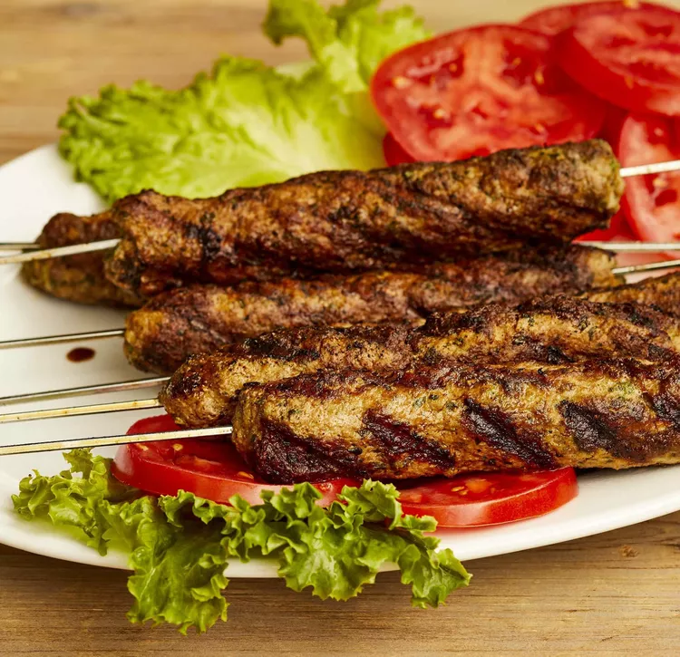

Indian-Style Seekh Kebab
Document

Description:
Indian-style Seekh Kebabs are flavorful and aromatic grilled kebabs made with minced meat, spices, and herbs, typically served with a side of mint chutney and fresh salad.
Ingredients:
- Minced meat (chicken, lamb, or beef)
- Onion, finely chopped
- Garlic, minced
- Ginger, grated
- Green chilies, finely chopped
- Fresh coriander (cilantro), chopped
- Garam masala
- Cumin powder
- Coriander powder
- Red chili powder
- Salt
- Lemon juice
- Cooking oil
- Skewers
Steps:
Prepare the kebab mixture:
- In a large bowl, combine the minced meat, chopped onion, garlic, ginger, green chilies
, fresh coriander, garam masala, cumin powder, coriander powder, red chili powder, salt, and a splash of lemon juice. Mix well to combine all the ingredients.
Form the kebabs:
- Take a portion of the mixture and mold it onto skewers, shaping them into long, cylindrical kebabs. Ensure the meat is evenly distributed along the skewer.
Grill the Kebab:
- Preheat a grill or barbecue to medium-high heat.
- Brush the kebabs with a little oil and place them on the grill. Cook for about 10-15 minutes, turning occasionally, until the kebabs are cooked through and have a charred exterior.
Serve hot:
- Once cooked, remove the Seekh Kebabs from the grill and let them rest for a few minutes.
- Serve the kebabs hot with mint chutney, lemon wedges, and a side of fresh salad or naan bread.